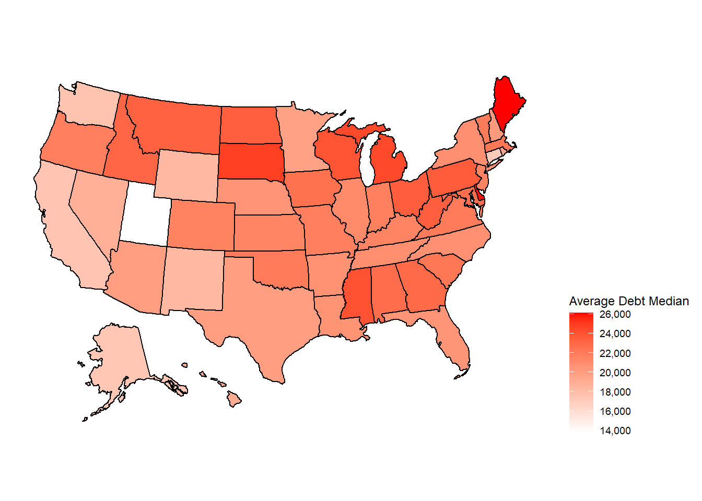
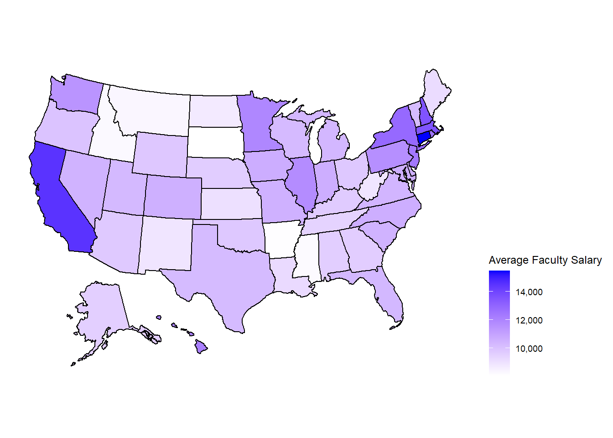

Section 2 Data Acquisition
library(plyr)
library(tidyverse)
library(Hmisc)
library(httr)
library(jsonlite)
#install.packages("tmap")
library(tmap)
library(leaflet)
library(treemap)
library(kableExtra)
`%notin%` <- Negate(`%in%`)
MakePretty <- function(x) {
x %>% kbl(align = "c") %>% kable_material()
}2.1 Set-up and API Exploration
For our project, we wanted to practice using API to pass the data into our global environment and attempt to explore and extract our desired variables using base R.
As you will see, our attempt failed, but was useful in helping us understand the relational structure of the College Scorecard Data and the limits of simple indexing when dealing with complicated data structures.
2.1.1 Project Directory Management
Prior to extracting any of the data, we want to ensure that our project is reproducible. Thus, we first create a sub-directory within the user’s working directory, which will hold the .csv files we will write containing our variables of interest.
Next, we pass the API key into an object so that it can be called in the GET() function, which pulls the data from the API into out global environment.
APIKey = "FELgrGb47PaevTWxqZTt6etFaQVnDbKpcJLaPL6a"
res = GET(paste0("https://api.data.gov/ed/collegescorecard/v1/schools?api_key=", APIKey))This data is initially in a raw format that is pulled from a JSON file stored on the API servers. To do this, we first convert the raw data to char and call the fromJSON() function to convert the data to a more “R friendly” data structure.
## [1] "list" "vector"Now that this raw JSON file is converted to a list, we can begin our exploration of the data.
2.1.2 API Exploration
We originally intended on using list2env(yearsLi, envir = .GlobalEnv) to split the list into multiple data.frame objects, but the fact that the names of the listed data frames are numeric values will be a problem. When calling these data frames, R will have to decide whether the user input 2012 is calling the data$2012 data set, or the number 2012. This is likely to cause problems in our later analysis, so we have to look at the names() of objects in our data list to see how we might adjust our approach to exploring the data.
## [1] "2012" "2011" "2010" "2009" "1998" "2008"
## [7] "1997" "2007" "1996" "2006" "2005" "school"
## [13] "2004" "2003" "2002" "id" "latest" "1999"
## [19] "2001" "2000" "2018" "ope6_id" "2017" "2016"
## [25] "2015" "2014" "2013" "ope8_id" "location"Upon looking at the names() we noticed that not all of the listed data frames are named after years, and thus are likely contain different data than the others.
Therefore, we first extract the non-year data frames, prior to extracting the year data frames with a character alteration (to make them non-numeric),
id_data <- data$results[c("school", "id", "location", "ope6_id", "ope8_id")]
yearsLi<- data$results[names(data$results) %notin% c("school", "id", "location", "ope6_id", "ope8_id")]
names(yearsLi) <- paste0("yr", names(yearsLi))
#list2env(yearsLi, envir = .GlobalEnv)At this point, we then called list2env(data$results, envir = .GlobalEnv) to create individual dataframes of each object in the yearsLi list, which helped us understand what was happening at different levels of the data structure, but ultimately left us more confused about how we should approach querying this data.
This code, as well as the code we used to analyze these objects below, is commented it out because it creates an unnecessary number of objects in the global environment, but retained in this document to show the attempts we made at exploring the data structure.
#
#names(yr2012)
#contents(id_data$school)
#contents(yr2012$academics$program$bachelors)
#yr2012$academics$program$bachelors
#length(id_data$ope8_id)At this point, the challenge of collecting data directly from the API seemed insurmountable, but we sought a solution and turned to the sage of all data science obstacles: Google.
2.2 The rscorecard and tidyverse approach
As expected, we found out savior in the annals of algorithmic wisdom when we stumbled upon a package called {rscorecard}.
The {rscorecard} package is a wrapper for the College Scorecard API that takes full advantage of the complexity in this relational data structure by employing useful tools from the tidyverse eco-system. Using {dplyr} functions, specified to this data set, and pipe operators %>% from {magrittr}, the {rscorecard} package provides an astonishingly simple solution for querying data directly from the API.
The package works by accessing the API directly using the users API key as an argument in the sc_key() function.
## DATAGOV_API_KEY environment variable now set. You may now use sc_get() without specifying a key.As the message above states, once the API key is accessed, the user can append querying functions like sc_filter(), to collect observations that satisfy booleans, sc_select(), to subset the data by columns, and sc_year(), to select the data from a specified year.
These functions are mentioned and explained here because they what we use to extract data on Finances, Demographics, and Death Rates from schools that classify as R1 and R2 research institutions.
2.2.1 Finances
F_latest <- sc_init() %>%
sc_filter(distanceonly == 0, ccbasic %in% c(15, 16)) %>%
sc_select(control, instnm, ccbasic, stabbr, npt4_pub, npt4_priv, costt4_a, grad_debt_mdn, avgfacsal, unemp_rate) %>%
sc_year("latest") %>%
sc_get()## Large request will require: 2 additional pulls.## Request chunk 1## Request chunk 2## Request complete!F_2018 <- sc_init() %>%
sc_filter(distanceonly == 0, ccbasic %in% c(15, 16)) %>%
sc_select(control, instnm, ccbasic, stabbr, npt4_pub, npt4_priv, costt4_a, grad_debt_mdn, avgfacsal, unemp_rate) %>%
sc_year(2018) %>%
sc_get()## Large request will require: 2 additional pulls.## Request chunk 1## Request chunk 2## Request complete!F_2017 <- sc_init() %>%
sc_filter(distanceonly == 0, ccbasic %in% c(15, 16)) %>%
sc_select(control, instnm, ccbasic, stabbr, npt4_pub, npt4_priv, costt4_a, grad_debt_mdn, avgfacsal, unemp_rate) %>%
sc_year(2017) %>%
sc_get()## Large request will require: 2 additional pulls.## Request chunk 1## Request chunk 2## Request complete!F_2016 <- sc_init() %>%
sc_filter(distanceonly == 0, ccbasic %in% c(15, 16)) %>%
sc_select(control, instnm, ccbasic, stabbr, npt4_pub, npt4_priv, costt4_a, grad_debt_mdn, avgfacsal, unemp_rate) %>%
sc_year(2016) %>%
sc_get()## Large request will require: 2 additional pulls.## Request chunk 1## Request chunk 2## Request complete!F_2015 <- sc_init() %>%
sc_filter(distanceonly == 0, ccbasic %in% c(15, 16)) %>%
sc_select(control, instnm, ccbasic, stabbr, npt4_pub, npt4_priv, costt4_a, grad_debt_mdn, avgfacsal, unemp_rate) %>%
sc_year(2015) %>%
sc_get()## Large request will require: 2 additional pulls.## Request chunk 1## Request chunk 2## Request complete!## # A tibble: 266 x 11
## control instnm ccbasic stabbr npt4_pub npt4_priv costt4_a grad_debt_mdn
## <int> <chr> <int> <chr> <int> <int> <int> <dbl>
## 1 1 India~ 16 IN 10987 NA 20704 22343
## 2 1 Unive~ 15 KS 18571 NA 24996 21105
## 3 2 Bosto~ 15 MA NA 33562 70588 16939
## 4 1 Oakla~ 16 MI 11560 NA 21231 25000
## 5 1 Unive~ 15 MS 13857 NA 24822 19500
## 6 1 Misso~ 16 MO 14205 NA 22012 24750
## 7 2 Washi~ 15 MO NA 27427 71975 16075
## 8 1 Monta~ 15 MT 18036 NA 20464 23500
## 9 1 Unive~ 16 NE 13511 NA 18849 20250
## 10 1 Unive~ 15 NV 10551 NA 17582 18750
## # ... with 256 more rows, and 3 more variables: avgfacsal <int>,
## # unemp_rate <dbl>, year <chr>## # A tibble: 266 x 11
## control instnm ccbasic stabbr npt4_pub npt4_priv costt4_a grad_debt_mdn
## <int> <chr> <int> <chr> <int> <int> <int> <lgl>
## 1 1 India~ 16 IN 10987 NA 20704 NA
## 2 1 Unive~ 15 KS 18571 NA 24996 NA
## 3 2 Bosto~ 15 MA NA 33562 70588 NA
## 4 1 Oakla~ 16 MI 11560 NA 21231 NA
## 5 1 Unive~ 15 MS 13857 NA 24822 NA
## 6 1 Misso~ 16 MO 14205 NA 22012 NA
## 7 2 Washi~ 15 MO NA 27427 71975 NA
## 8 1 Monta~ 15 MT 18036 NA 20464 NA
## 9 1 Unive~ 16 NE 13511 NA 18849 NA
## 10 1 Unive~ 15 NV 10551 NA 17582 NA
## # ... with 256 more rows, and 3 more variables: avgfacsal <int>,
## # unemp_rate <lgl>, year <dbl>## # A tibble: 266 x 11
## control instnm ccbasic stabbr npt4_pub npt4_priv costt4_a grad_debt_mdn
## <int> <chr> <int> <chr> <int> <int> <int> <dbl>
## 1 1 India~ 16 IN 12021 NA 20352 22343
## 2 1 Unive~ 15 KS 18814 NA 24824 21105
## 3 2 Bosto~ 15 MA NA 34550 68039 16939
## 4 1 Oakla~ 16 MI 12779 NA 21262 25000
## 5 1 Unive~ 15 MS 13929 NA 23606 19500
## 6 1 Misso~ 16 MO 14473 NA 22045 24750
## 7 2 Washi~ 15 MO NA 28540 69754 16075
## 8 1 Monta~ 15 MT 17754 NA 19980 23500
## 9 1 Unive~ 16 NE 13173 NA 17935 20250
## 10 1 Unive~ 15 NV 10555 NA 16964 18750
## # ... with 256 more rows, and 3 more variables: avgfacsal <int>,
## # unemp_rate <lgl>, year <dbl>## # A tibble: 266 x 11
## control instnm ccbasic stabbr npt4_pub npt4_priv costt4_a grad_debt_mdn
## <int> <chr> <int> <chr> <int> <int> <int> <dbl>
## 1 1 India~ 16 IN 12417 NA 20451 22668.
## 2 1 Unive~ 15 KS 18234 NA 23687 20500
## 3 2 Bosto~ 15 MA NA 34356 65595 19000
## 4 1 Oakla~ 16 MI 12415 NA 20502 25000
## 5 1 Unive~ 15 MS 14494 NA 23372 19500
## 6 1 Misso~ 16 MO 14303 NA 21698 24250
## 7 2 Washi~ 15 MO NA 29957 67751 19500
## 8 1 Monta~ 15 MT 17050 NA 19441 23505
## 9 1 Unive~ 16 NE 12899 NA 17712 19500
## 10 1 Unive~ 15 NV 10726 NA 17131 18500
## # ... with 256 more rows, and 3 more variables: avgfacsal <int>,
## # unemp_rate <lgl>, year <dbl>## # A tibble: 266 x 11
## control instnm ccbasic stabbr npt4_pub npt4_priv costt4_a grad_debt_mdn
## <int> <chr> <int> <chr> <int> <int> <int> <dbl>
## 1 1 India~ 16 IN 12861 NA 20257 23000
## 2 1 Unive~ 15 KS 18755 NA 23733 20454
## 3 2 Bosto~ 15 MA NA 33661 62968 19000
## 4 1 Oakla~ 16 MI 11929 NA 19475 25000
## 5 1 Unive~ 15 MS 14284 NA 22704 19500
## 6 1 Misso~ 16 MO 14096 NA 21793 24266.
## 7 2 Washi~ 15 MO NA 32873 65887 19500
## 8 1 Monta~ 15 MT 16809 NA 18961 23683
## 9 1 Unive~ 16 NE 12505 NA 17148 19032
## 10 1 Unive~ 15 NV 10915 NA 16791 18750
## # ... with 256 more rows, and 3 more variables: avgfacsal <int>,
## # unemp_rate <lgl>, year <dbl>2.2.2 Demographics
D_latest <- sc_init() %>%
sc_filter(distanceonly == 0, ccbasic %in% c(15, 16)) %>%
sc_select(control, instnm, ccbasic, stabbr,female, first_gen, poverty_rate, veteran, unemp_rate, ugds_white, ugds_black, ugds_hisp, ugds_asian, ugds_aian, ugds_nhpi, ugds_2mor, ugds_nra, ugds_unkn, ugds_whitenh, ugds_blacknh, ugds_api, ugds_aianold, ugds_hispold) %>%
sc_year("latest") %>%
sc_get()## Large request will require: 2 additional pulls.## Request chunk 1## Request chunk 2## Request complete!D_2018 <- sc_init() %>%
sc_filter(distanceonly == 0, ccbasic %in% c(15, 16)) %>%
sc_select(control, instnm, ccbasic, stabbr, female, first_gen, poverty_rate, veteran, unemp_rate, ugds_white, ugds_black, ugds_hisp, ugds_asian, ugds_aian, ugds_nhpi, ugds_2mor, ugds_nra, ugds_unkn, ugds_whitenh, ugds_blacknh, ugds_api, ugds_aianold, ugds_hispold) %>%
sc_year(2018) %>%
sc_get()## Large request will require: 2 additional pulls.## Request chunk 1## Request chunk 2## Request complete!D_2017 <- sc_init() %>%
sc_filter(distanceonly == 0, ccbasic %in% c(15, 16)) %>%
sc_select(control, instnm, ccbasic, stabbr, female, first_gen, poverty_rate, veteran, unemp_rate, ugds_white, ugds_black, ugds_hisp, ugds_asian, ugds_aian, ugds_nhpi, ugds_2mor, ugds_nra, ugds_unkn, ugds_whitenh, ugds_blacknh, ugds_api, ugds_aianold, ugds_hispold) %>%
sc_year(2017) %>%
sc_get()## Large request will require: 2 additional pulls.## Request chunk 1## Request chunk 2## Request complete!D_2016 <- sc_init() %>%
sc_filter(distanceonly == 0, ccbasic %in% c(15, 16)) %>%
sc_select(control, instnm, ccbasic, stabbr, female, first_gen, poverty_rate, veteran, unemp_rate, ugds_white, ugds_black, ugds_hisp, ugds_asian, ugds_aian, ugds_nhpi, ugds_2mor, ugds_nra, ugds_unkn, ugds_whitenh, ugds_blacknh, ugds_api, ugds_aianold, ugds_hispold) %>%
sc_year(2016) %>%
sc_get()## Large request will require: 2 additional pulls.## Request chunk 1## Request chunk 2## Request complete!D_2015 <- sc_init() %>%
sc_filter(distanceonly == 0, ccbasic %in% c(15, 16)) %>%
sc_select(control, instnm, ccbasic, stabbr, female, first_gen, poverty_rate, veteran, unemp_rate, ugds_white, ugds_black, ugds_hisp, ugds_asian, ugds_aian, ugds_nhpi, ugds_2mor, ugds_nra, ugds_unkn, ugds_whitenh, ugds_blacknh, ugds_api, ugds_aianold, ugds_hispold) %>%
sc_year(2015) %>%
sc_get()## Large request will require: 2 additional pulls.## Request chunk 1## Request chunk 2## Request complete!## # A tibble: 266 x 24
## control instnm ccbasic stabbr female first_gen poverty_rate veteran
## <int> <chr> <int> <chr> <dbl> <dbl> <dbl> <dbl>
## 1 1 India~ 16 IN 0.610 0.351 6.20 0.00394
## 2 1 Unive~ 15 KS 0.548 0.222 5.24 0.00429
## 3 2 Bosto~ 15 MA 0.519 0.132 5.93 NA
## 4 1 Oakla~ 16 MI 0.608 0.324 5.74 0.00231
## 5 1 Unive~ 15 MS 0.608 0.235 12.2 0.00176
## 6 1 Misso~ 16 MO 0.241 0.225 7.31 NA
## 7 2 Washi~ 15 MO 0.534 0.114 6.17 NA
## 8 1 Monta~ 15 MT 0.493 0.233 8.58 0.00493
## 9 1 Unive~ 16 NE 0.561 0.348 5.36 0.00304
## 10 1 Unive~ 15 NV 0.597 0.423 7.25 0.00521
## # ... with 256 more rows, and 16 more variables: unemp_rate <dbl>,
## # ugds_white <dbl>, ugds_black <dbl>, ugds_hisp <dbl>, ugds_asian <dbl>,
## # ugds_aian <dbl>, ugds_nhpi <dbl>, ugds_2mor <dbl>, ugds_nra <dbl>,
## # ugds_unkn <dbl>, ugds_whitenh <lgl>, ugds_blacknh <lgl>, ugds_api <lgl>,
## # ugds_aianold <lgl>, ugds_hispold <lgl>, year <chr>## # A tibble: 266 x 24
## control instnm ccbasic stabbr female first_gen poverty_rate veteran
## <int> <chr> <int> <chr> <lgl> <lgl> <lgl> <lgl>
## 1 1 India~ 16 IN NA NA NA NA
## 2 1 Unive~ 15 KS NA NA NA NA
## 3 2 Bosto~ 15 MA NA NA NA NA
## 4 1 Oakla~ 16 MI NA NA NA NA
## 5 1 Unive~ 15 MS NA NA NA NA
## 6 1 Misso~ 16 MO NA NA NA NA
## 7 2 Washi~ 15 MO NA NA NA NA
## 8 1 Monta~ 15 MT NA NA NA NA
## 9 1 Unive~ 16 NE NA NA NA NA
## 10 1 Unive~ 15 NV NA NA NA NA
## # ... with 256 more rows, and 16 more variables: unemp_rate <lgl>,
## # ugds_white <dbl>, ugds_black <dbl>, ugds_hisp <dbl>, ugds_asian <dbl>,
## # ugds_aian <dbl>, ugds_nhpi <dbl>, ugds_2mor <dbl>, ugds_nra <dbl>,
## # ugds_unkn <dbl>, ugds_whitenh <lgl>, ugds_blacknh <lgl>, ugds_api <lgl>,
## # ugds_aianold <lgl>, ugds_hispold <lgl>, year <dbl>## # A tibble: 266 x 24
## control instnm ccbasic stabbr female first_gen poverty_rate veteran
## <int> <chr> <int> <chr> <lgl> <lgl> <lgl> <lgl>
## 1 1 India~ 16 IN NA NA NA NA
## 2 1 Unive~ 15 KS NA NA NA NA
## 3 2 Bosto~ 15 MA NA NA NA NA
## 4 1 Oakla~ 16 MI NA NA NA NA
## 5 1 Unive~ 15 MS NA NA NA NA
## 6 1 Misso~ 16 MO NA NA NA NA
## 7 2 Washi~ 15 MO NA NA NA NA
## 8 1 Monta~ 15 MT NA NA NA NA
## 9 1 Unive~ 16 NE NA NA NA NA
## 10 1 Unive~ 15 NV NA NA NA NA
## # ... with 256 more rows, and 16 more variables: unemp_rate <lgl>,
## # ugds_white <dbl>, ugds_black <dbl>, ugds_hisp <dbl>, ugds_asian <dbl>,
## # ugds_aian <dbl>, ugds_nhpi <dbl>, ugds_2mor <dbl>, ugds_nra <dbl>,
## # ugds_unkn <dbl>, ugds_whitenh <lgl>, ugds_blacknh <lgl>, ugds_api <lgl>,
## # ugds_aianold <lgl>, ugds_hispold <lgl>, year <dbl>## # A tibble: 266 x 24
## control instnm ccbasic stabbr female first_gen poverty_rate veteran
## <int> <chr> <int> <chr> <dbl> <dbl> <lgl> <dbl>
## 1 1 India~ 16 IN 0.610 0.351 NA 0.00394
## 2 1 Unive~ 15 KS 0.548 0.222 NA 0.00429
## 3 2 Bosto~ 15 MA 0.519 0.132 NA NA
## 4 1 Oakla~ 16 MI 0.608 0.324 NA 0.00231
## 5 1 Unive~ 15 MS 0.608 0.235 NA 0.00176
## 6 1 Misso~ 16 MO 0.241 0.225 NA NA
## 7 2 Washi~ 15 MO 0.534 0.114 NA NA
## 8 1 Monta~ 15 MT 0.493 0.233 NA 0.00493
## 9 1 Unive~ 16 NE 0.561 0.348 NA 0.00304
## 10 1 Unive~ 15 NV 0.597 0.423 NA 0.00521
## # ... with 256 more rows, and 16 more variables: unemp_rate <lgl>,
## # ugds_white <dbl>, ugds_black <dbl>, ugds_hisp <dbl>, ugds_asian <dbl>,
## # ugds_aian <dbl>, ugds_nhpi <dbl>, ugds_2mor <dbl>, ugds_nra <dbl>,
## # ugds_unkn <dbl>, ugds_whitenh <lgl>, ugds_blacknh <lgl>, ugds_api <lgl>,
## # ugds_aianold <lgl>, ugds_hispold <lgl>, year <dbl>## # A tibble: 266 x 24
## control instnm ccbasic stabbr female first_gen poverty_rate veteran
## <int> <chr> <int> <chr> <dbl> <dbl> <lgl> <dbl>
## 1 1 India~ 16 IN 0.607 0.361 NA 0.00390
## 2 1 Unive~ 15 KS 0.536 0.226 NA 0.00534
## 3 2 Bosto~ 15 MA 0.532 0.125 NA NA
## 4 1 Oakla~ 16 MI 0.599 0.325 NA 0.00207
## 5 1 Unive~ 15 MS 0.613 0.226 NA 0.00209
## 6 1 Misso~ 16 MO 0.228 0.226 NA NA
## 7 2 Washi~ 15 MO 0.541 0.0897 NA NA
## 8 1 Monta~ 15 MT 0.492 0.231 NA 0.00589
## 9 1 Unive~ 16 NE 0.55 0.337 NA 0.00492
## 10 1 Unive~ 15 NV 0.586 0.419 NA 0.00573
## # ... with 256 more rows, and 16 more variables: unemp_rate <lgl>,
## # ugds_white <dbl>, ugds_black <dbl>, ugds_hisp <dbl>, ugds_asian <dbl>,
## # ugds_aian <dbl>, ugds_nhpi <dbl>, ugds_2mor <dbl>, ugds_nra <dbl>,
## # ugds_unkn <dbl>, ugds_whitenh <lgl>, ugds_blacknh <lgl>, ugds_api <lgl>,
## # ugds_aianold <lgl>, ugds_hispold <lgl>, year <dbl>2.2.3 Death
Dth_latest <- sc_init() %>%
sc_filter(distanceonly == 0, ccbasic %in% c(15, 16)) %>%
sc_select(control, instnm, ccbasic, stabbr, death_yr2_rt, lo_inc_death_yr2_rt, md_inc_death_yr2_rt, hi_inc_death_yr2_rt, death_yr3_rt, lo_inc_death_yr3_rt, md_inc_death_yr3_rt, hi_inc_death_yr3_rt, death_yr4_rt, lo_inc_death_yr4_rt, md_inc_death_yr4_rt, hi_inc_death_yr4_rt, death_yr6_rt, lo_inc_death_yr6_rt, md_inc_death_yr6_rt, hi_inc_death_yr6_rt, death_yr8_rt, lo_inc_death_yr8_rt, md_inc_death_yr8_rt, hi_inc_death_yr8_rt) %>%
sc_year("latest") %>%
sc_get()## Large request will require: 2 additional pulls.## Request chunk 1## Request chunk 2## Request complete!Dth_2018 <- sc_init() %>%
sc_filter(distanceonly == 0, ccbasic %in% c(15, 16)) %>%
sc_select(control, instnm, ccbasic, stabbr,death_yr2_rt, lo_inc_death_yr2_rt, md_inc_death_yr2_rt, hi_inc_death_yr2_rt, death_yr3_rt, lo_inc_death_yr3_rt, md_inc_death_yr3_rt, hi_inc_death_yr3_rt, death_yr4_rt, lo_inc_death_yr4_rt, md_inc_death_yr4_rt, hi_inc_death_yr4_rt, death_yr6_rt, lo_inc_death_yr6_rt, md_inc_death_yr6_rt, hi_inc_death_yr6_rt, death_yr8_rt, lo_inc_death_yr8_rt, md_inc_death_yr8_rt, hi_inc_death_yr8_rt) %>%
sc_year(2018) %>%
sc_get()## Large request will require: 2 additional pulls.## Request chunk 1## Request chunk 2## Request complete!Dth_2017 <- sc_init() %>%
sc_filter(distanceonly == 0, ccbasic %in% c(15, 16)) %>%
sc_select(control, instnm, ccbasic, stabbr, death_yr2_rt, lo_inc_death_yr2_rt, md_inc_death_yr2_rt, hi_inc_death_yr2_rt, death_yr3_rt, lo_inc_death_yr3_rt, md_inc_death_yr3_rt, hi_inc_death_yr3_rt, death_yr4_rt, lo_inc_death_yr4_rt, md_inc_death_yr4_rt, hi_inc_death_yr4_rt, death_yr6_rt, lo_inc_death_yr6_rt, md_inc_death_yr6_rt, hi_inc_death_yr6_rt, death_yr8_rt, lo_inc_death_yr8_rt, md_inc_death_yr8_rt, hi_inc_death_yr8_rt) %>%
sc_year(2017) %>%
sc_get()## Large request will require: 2 additional pulls.## Request chunk 1## Request chunk 2## Request complete!Dth_2016 <- sc_init() %>%
sc_filter(distanceonly == 0, ccbasic %in% c(15, 16)) %>%
sc_select(control, instnm, ccbasic, stabbr, death_yr2_rt, lo_inc_death_yr2_rt, md_inc_death_yr2_rt, hi_inc_death_yr2_rt, death_yr3_rt, lo_inc_death_yr3_rt, md_inc_death_yr3_rt, hi_inc_death_yr3_rt, death_yr4_rt, lo_inc_death_yr4_rt, md_inc_death_yr4_rt, hi_inc_death_yr4_rt, death_yr6_rt, lo_inc_death_yr6_rt, md_inc_death_yr6_rt, hi_inc_death_yr6_rt, death_yr8_rt, lo_inc_death_yr8_rt, md_inc_death_yr8_rt, hi_inc_death_yr8_rt) %>%
sc_year(2016) %>%
sc_get()## Large request will require: 2 additional pulls.## Request chunk 1## Request chunk 2## Request complete!Dth_2015 <- sc_init() %>%
sc_filter(distanceonly == 0, ccbasic %in% c(15, 16)) %>%
sc_select(control, instnm, ccbasic, stabbr, death_yr2_rt, lo_inc_death_yr2_rt, md_inc_death_yr2_rt, hi_inc_death_yr2_rt, death_yr3_rt, lo_inc_death_yr3_rt, md_inc_death_yr3_rt, hi_inc_death_yr3_rt, death_yr4_rt, lo_inc_death_yr4_rt, md_inc_death_yr4_rt, hi_inc_death_yr4_rt, death_yr6_rt, lo_inc_death_yr6_rt, md_inc_death_yr6_rt, hi_inc_death_yr6_rt, death_yr8_rt, lo_inc_death_yr8_rt, md_inc_death_yr8_rt, hi_inc_death_yr8_rt) %>%
sc_year(2015) %>%
sc_get()## Large request will require: 2 additional pulls.## Request chunk 1## Request chunk 2## Request complete!## # A tibble: 266 x 25
## control instnm ccbasic stabbr death_yr2_rt lo_inc_death_yr~ md_inc_death_yr~
## <int> <chr> <int> <chr> <dbl> <lgl> <lgl>
## 1 1 India~ 16 IN NA NA NA
## 2 1 Unive~ 15 KS NA NA NA
## 3 2 Bosto~ 15 MA NA NA NA
## 4 1 Oakla~ 16 MI NA NA NA
## 5 1 Unive~ 15 MS NA NA NA
## 6 1 Misso~ 16 MO NA NA NA
## 7 2 Washi~ 15 MO NA NA NA
## 8 1 Monta~ 15 MT NA NA NA
## 9 1 Unive~ 16 NE NA NA NA
## 10 1 Unive~ 15 NV NA NA NA
## # ... with 256 more rows, and 18 more variables: hi_inc_death_yr2_rt <lgl>,
## # death_yr3_rt <dbl>, lo_inc_death_yr3_rt <lgl>, md_inc_death_yr3_rt <lgl>,
## # hi_inc_death_yr3_rt <lgl>, death_yr4_rt <dbl>, lo_inc_death_yr4_rt <dbl>,
## # md_inc_death_yr4_rt <dbl>, hi_inc_death_yr4_rt <lgl>, death_yr6_rt <dbl>,
## # lo_inc_death_yr6_rt <dbl>, md_inc_death_yr6_rt <dbl>,
## # hi_inc_death_yr6_rt <lgl>, death_yr8_rt <dbl>, lo_inc_death_yr8_rt <dbl>,
## # md_inc_death_yr8_rt <dbl>, hi_inc_death_yr8_rt <lgl>, year <chr>## # A tibble: 266 x 25
## control instnm ccbasic stabbr death_yr2_rt lo_inc_death_yr~ md_inc_death_yr~
## <int> <chr> <int> <chr> <lgl> <lgl> <lgl>
## 1 1 India~ 16 IN NA NA NA
## 2 1 Unive~ 15 KS NA NA NA
## 3 2 Bosto~ 15 MA NA NA NA
## 4 1 Oakla~ 16 MI NA NA NA
## 5 1 Unive~ 15 MS NA NA NA
## 6 1 Misso~ 16 MO NA NA NA
## 7 2 Washi~ 15 MO NA NA NA
## 8 1 Monta~ 15 MT NA NA NA
## 9 1 Unive~ 16 NE NA NA NA
## 10 1 Unive~ 15 NV NA NA NA
## # ... with 256 more rows, and 18 more variables: hi_inc_death_yr2_rt <lgl>,
## # death_yr3_rt <lgl>, lo_inc_death_yr3_rt <lgl>, md_inc_death_yr3_rt <lgl>,
## # hi_inc_death_yr3_rt <lgl>, death_yr4_rt <lgl>, lo_inc_death_yr4_rt <lgl>,
## # md_inc_death_yr4_rt <lgl>, hi_inc_death_yr4_rt <lgl>, death_yr6_rt <lgl>,
## # lo_inc_death_yr6_rt <lgl>, md_inc_death_yr6_rt <lgl>,
## # hi_inc_death_yr6_rt <lgl>, death_yr8_rt <lgl>, lo_inc_death_yr8_rt <lgl>,
## # md_inc_death_yr8_rt <lgl>, hi_inc_death_yr8_rt <lgl>, year <dbl>## # A tibble: 266 x 25
## control instnm ccbasic stabbr death_yr2_rt lo_inc_death_yr~ md_inc_death_yr~
## <int> <chr> <int> <chr> <lgl> <lgl> <lgl>
## 1 1 India~ 16 IN NA NA NA
## 2 1 Unive~ 15 KS NA NA NA
## 3 2 Bosto~ 15 MA NA NA NA
## 4 1 Oakla~ 16 MI NA NA NA
## 5 1 Unive~ 15 MS NA NA NA
## 6 1 Misso~ 16 MO NA NA NA
## 7 2 Washi~ 15 MO NA NA NA
## 8 1 Monta~ 15 MT NA NA NA
## 9 1 Unive~ 16 NE NA NA NA
## 10 1 Unive~ 15 NV NA NA NA
## # ... with 256 more rows, and 18 more variables: hi_inc_death_yr2_rt <lgl>,
## # death_yr3_rt <lgl>, lo_inc_death_yr3_rt <lgl>, md_inc_death_yr3_rt <lgl>,
## # hi_inc_death_yr3_rt <lgl>, death_yr4_rt <lgl>, lo_inc_death_yr4_rt <lgl>,
## # md_inc_death_yr4_rt <lgl>, hi_inc_death_yr4_rt <lgl>, death_yr6_rt <lgl>,
## # lo_inc_death_yr6_rt <lgl>, md_inc_death_yr6_rt <lgl>,
## # hi_inc_death_yr6_rt <lgl>, death_yr8_rt <lgl>, lo_inc_death_yr8_rt <lgl>,
## # md_inc_death_yr8_rt <lgl>, hi_inc_death_yr8_rt <lgl>, year <dbl>## # A tibble: 266 x 25
## control instnm ccbasic stabbr death_yr2_rt lo_inc_death_yr~ md_inc_death_yr~
## <int> <chr> <int> <chr> <dbl> <lgl> <lgl>
## 1 1 India~ 16 IN NA NA NA
## 2 1 Unive~ 15 KS NA NA NA
## 3 2 Bosto~ 15 MA NA NA NA
## 4 1 Oakla~ 16 MI NA NA NA
## 5 1 Unive~ 15 MS NA NA NA
## 6 1 Misso~ 16 MO NA NA NA
## 7 2 Washi~ 15 MO NA NA NA
## 8 1 Monta~ 15 MT NA NA NA
## 9 1 Unive~ 16 NE NA NA NA
## 10 1 Unive~ 15 NV NA NA NA
## # ... with 256 more rows, and 18 more variables: hi_inc_death_yr2_rt <lgl>,
## # death_yr3_rt <dbl>, lo_inc_death_yr3_rt <lgl>, md_inc_death_yr3_rt <lgl>,
## # hi_inc_death_yr3_rt <lgl>, death_yr4_rt <dbl>, lo_inc_death_yr4_rt <dbl>,
## # md_inc_death_yr4_rt <dbl>, hi_inc_death_yr4_rt <lgl>, death_yr6_rt <dbl>,
## # lo_inc_death_yr6_rt <dbl>, md_inc_death_yr6_rt <dbl>,
## # hi_inc_death_yr6_rt <lgl>, death_yr8_rt <dbl>, lo_inc_death_yr8_rt <dbl>,
## # md_inc_death_yr8_rt <dbl>, hi_inc_death_yr8_rt <lgl>, year <dbl>## # A tibble: 266 x 25
## control instnm ccbasic stabbr death_yr2_rt lo_inc_death_yr~ md_inc_death_yr~
## <int> <chr> <int> <chr> <dbl> <lgl> <lgl>
## 1 1 India~ 16 IN NA NA NA
## 2 1 Unive~ 15 KS NA NA NA
## 3 2 Bosto~ 15 MA NA NA NA
## 4 1 Oakla~ 16 MI NA NA NA
## 5 1 Unive~ 15 MS NA NA NA
## 6 1 Misso~ 16 MO NA NA NA
## 7 2 Washi~ 15 MO NA NA NA
## 8 1 Monta~ 15 MT NA NA NA
## 9 1 Unive~ 16 NE NA NA NA
## 10 1 Unive~ 15 NV NA NA NA
## # ... with 256 more rows, and 18 more variables: hi_inc_death_yr2_rt <lgl>,
## # death_yr3_rt <dbl>, lo_inc_death_yr3_rt <lgl>, md_inc_death_yr3_rt <lgl>,
## # hi_inc_death_yr3_rt <lgl>, death_yr4_rt <dbl>, lo_inc_death_yr4_rt <lgl>,
## # md_inc_death_yr4_rt <lgl>, hi_inc_death_yr4_rt <lgl>, death_yr6_rt <dbl>,
## # lo_inc_death_yr6_rt <dbl>, md_inc_death_yr6_rt <lgl>,
## # hi_inc_death_yr6_rt <lgl>, death_yr8_rt <dbl>, lo_inc_death_yr8_rt <dbl>,
## # md_inc_death_yr8_rt <lgl>, hi_inc_death_yr8_rt <lgl>, year <dbl>R1Schools <- sc_init() %>%
sc_filter(ccbasic == 15) %>%
sc_select(control, instnm, stabbr) %>%
sc_year("latest") %>%
sc_get()## Large request will require: 1 additional pulls.## Request chunk 1## Request complete!##
## Attaching package: 'maps'## The following object is masked from 'package:purrr':
##
## map## The following object is masked from 'package:plyr':
##
## ozonelibrary(usmap)
debtMedian <- Finance %>%
group_by(stabbr) %>%
mutate(avgDebt = mean(grad_debt_mdn, na.rm = TRUE)) %>%
select(stabbr, avgDebt)%>%
filter(stabbr %notin% c('PR','DC')) %>%
ungroup()
debtMedian <- as.data.frame(debtMedian)
colnames(debtMedian) <- c("state", "avgDebt")
debtMedian[1]## state
## 1 IN
## 2 KS
## 3 MA
## 4 MI
## 5 MS
## 6 MO
## 7 MO
## 8 MT
## 9 NE
## 10 NV
## 11 CO
## 12 CA
## 13 CT
## 14 DE
## 15 FL
## 16 FL
## 17 FL
## 18 HI
## 19 GA
## 20 GA
## 21 OR
## 22 TN
## 23 TX
## 24 TX
## 25 TX
## 26 TX
## 27 CA
## 28 CA
## 29 FL
## 30 GA
## 31 IL
## 32 IL
## 33 IN
## 34 LA
## 35 LA
## 36 VA
## 37 WA
## 38 WV
## 39 WV
## 40 AL
## 41 AK
## 42 AL
## 43 AR
## 44 CA
## 45 CA
## 46 CA
## 47 SC
## 48 TN
## 49 TN
## 50 TX
## 51 TX
## 52 UT
## 53 WI
## 54 ME
## 55 MA
## 56 MA
## 57 MA
## 58 MA
## 59 NY
## 60 NY
## 61 NC
## 62 OH
## 63 CA
## 64 NY
## 65 NY
## 66 NY
## 67 NY
## 68 NC
## 69 OH
## 70 ND
## 71 MI
## 72 NE
## 73 NH
## 74 AZ
## 75 NJ
## 76 NJ
## 77 NJ
## 78 NJ
## 79 OK
## 80 PA
## 81 UT
## 82 VA
## 83 NC
## 84 OH
## 85 OH
## 86 OH
## 87 CA
## 88 CA
## 89 CA
## 90 CA
## 91 CO
## 92 KY
## 93 MI
## 94 NJ
## 95 NM
## 96 FL
## 97 ID
## 98 KS
## 99 LA
## 100 LA
## 101 MD
## 102 MD
## 103 MD
## 104 IL
## 105 IL
## 106 IA
## 107 GA
## 108 GA
## 109 ID
## 110 MA
## 111 MA
## 112 MA
## 113 MI
## 114 MI
## 115 MA
## 116 MA
## 117 AL
## 118 AR
## 119 AR
## 120 CA
## 121 CO
## 122 CO
## 123 AZ
## 124 OK
## 125 PA
## 126 TX
## 127 TX
## 128 TX
## 129 TX
## 130 TX
## 131 VT
## 132 MS
## 133 MO
## 134 NJ
## 135 NY
## 136 NY
## 137 NY
## 138 NY
## 139 NC
## 140 NC
## 141 OH
## 142 OH
## 143 OH
## 144 OH
## 145 OH
## 146 OR
## 147 OR
## 148 PA
## 149 PA
## 150 TN
## 151 WY
## 152 WI
## 153 CA
## 154 VA
## 155 UT
## 156 VA
## 157 RI
## 158 SD
## 159 OK
## 160 PA
## 161 PA
## 162 PA
## 163 TN
## 164 NJ
## 165 NM
## 166 NY
## 167 NY
## 168 NY
## 169 NY
## 170 TN
## 171 TX
## 172 TX
## 173 TX
## 174 TX
## 175 VA
## 176 WA
## 177 KS
## 178 KY
## 179 ME
## 180 MD
## 181 MD
## 182 MA
## 183 MA
## 184 OH
## 185 PA
## 186 CO
## 187 CT
## 188 FL
## 189 FL
## 190 FL
## 191 DE
## 192 NJ
## 193 NJ
## 194 NY
## 195 PA
## 196 PA
## 197 RI
## 198 SC
## 199 SD
## 200 MO
## 201 MO
## 202 MO
## 203 MT
## 204 NH
## 205 NC
## 206 NC
## 207 GA
## 208 FL
## 209 ID
## 210 IL
## 211 IL
## 212 IL
## 213 IN
## 214 GA
## 215 GA
## 216 IL
## 217 IL
## 218 IN
## 219 IA
## 220 CA
## 221 CA
## 222 CA
## 223 CO
## 224 FL
## 225 IL
## 226 LA
## 227 MN
## 228 MI
## 229 MA
## 230 MI
## 231 MI
## 232 MS
## 233 MS
## 234 NV
## 235 NY
## 236 NY
## 237 NY
## 238 NY
## 239 NY
## 240 NC
## 241 NC
## 242 AZ
## 243 OH
## 244 ND
## 245 TX
## 246 TX
## 247 TX
## 248 VA
## 249 VA
## 250 WI
## 251 IN
## 252 AZ
## 253 AZ
## 254 CA
## 255 CA
## 256 OH
## 257 AL
## 258 AL
## 259 IN
## 260 KS
## 261 MA
## 262 MI
## 263 MS
## 264 MO
## 265 MO
## 266 MT
## 267 NE
## 268 NV
## 269 CO
## 270 CA
## 271 CT
## 272 DE
## 273 FL
## 274 FL
## 275 FL
## 276 HI
## 277 GA
## 278 GA
## 279 OR
## 280 TN
## 281 TX
## 282 TX
## 283 TX
## 284 TX
## 285 CA
## 286 CA
## 287 FL
## 288 GA
## 289 IL
## 290 IL
## 291 IN
## 292 LA
## 293 LA
## 294 VA
## 295 WA
## 296 WV
## 297 WV
## 298 AL
## 299 AK
## 300 AL
## 301 AR
## 302 CA
## 303 CA
## 304 CA
## 305 SC
## 306 TN
## 307 TN
## 308 TX
## 309 TX
## 310 UT
## 311 WI
## 312 ME
## 313 MA
## 314 MA
## 315 MA
## 316 MA
## 317 NY
## 318 NY
## 319 NC
## 320 OH
## 321 CA
## 322 NY
## 323 NY
## 324 NY
## 325 NY
## 326 NC
## 327 OH
## 328 ND
## 329 MI
## 330 NE
## 331 NH
## 332 AZ
## 333 NJ
## 334 NJ
## 335 NJ
## 336 NJ
## 337 OK
## 338 PA
## 339 UT
## 340 VA
## 341 NC
## 342 OH
## 343 OH
## 344 OH
## 345 CA
## 346 CA
## 347 CA
## 348 CA
## 349 CO
## 350 KY
## 351 MI
## 352 NJ
## 353 NM
## 354 FL
## 355 ID
## 356 KS
## 357 LA
## 358 LA
## 359 MD
## 360 MD
## 361 MD
## 362 IL
## 363 IL
## 364 IA
## 365 GA
## 366 GA
## 367 ID
## 368 MA
## 369 MA
## 370 MA
## 371 MI
## 372 MI
## 373 MA
## 374 MA
## 375 AL
## 376 AR
## 377 AR
## 378 CA
## 379 CO
## 380 CO
## 381 AZ
## 382 OK
## 383 PA
## 384 TX
## 385 TX
## 386 TX
## 387 TX
## 388 TX
## 389 VT
## 390 MS
## 391 MO
## 392 NJ
## 393 NY
## 394 NY
## 395 NY
## 396 NY
## 397 NC
## 398 NC
## 399 OH
## 400 OH
## 401 OH
## 402 OH
## 403 OH
## 404 OR
## 405 OR
## 406 PA
## 407 PA
## 408 TN
## 409 WY
## 410 WI
## 411 CA
## 412 VA
## 413 UT
## 414 VA
## 415 RI
## 416 SD
## 417 OK
## 418 PA
## 419 PA
## 420 PA
## 421 TN
## 422 NJ
## 423 NM
## 424 NY
## 425 NY
## 426 NY
## 427 NY
## 428 TN
## 429 TX
## 430 TX
## 431 TX
## 432 TX
## 433 VA
## 434 WA
## 435 KS
## 436 KY
## 437 ME
## 438 MD
## 439 MD
## 440 MA
## 441 MA
## 442 OH
## 443 PA
## 444 CO
## 445 CT
## 446 FL
## 447 FL
## 448 FL
## 449 DE
## 450 NJ
## 451 NJ
## 452 NY
## 453 PA
## 454 PA
## 455 RI
## 456 SC
## 457 SD
## 458 MO
## 459 MO
## 460 MO
## 461 MT
## 462 NH
## 463 NC
## 464 NC
## 465 GA
## 466 FL
## 467 ID
## 468 IL
## 469 IL
## 470 IL
## 471 IN
## 472 GA
## 473 GA
## 474 IL
## 475 IL
## 476 IN
## 477 IA
## 478 CA
## 479 CA
## 480 CA
## 481 CO
## 482 FL
## 483 IL
## 484 LA
## 485 MN
## 486 MI
## 487 MA
## 488 MI
## 489 MI
## 490 MS
## 491 MS
## 492 NV
## 493 NY
## 494 NY
## 495 NY
## 496 NY
## 497 NY
## 498 NC
## 499 NC
## 500 AZ
## 501 OH
## 502 ND
## 503 TX
## 504 TX
## 505 TX
## 506 VA
## 507 VA
## 508 WI
## 509 IN
## 510 AZ
## 511 AZ
## 512 CA
## 513 CA
## 514 OH
## 515 AL
## 516 AL
## 517 IN
## 518 KS
## 519 MA
## 520 MI
## 521 MS
## 522 MO
## 523 MO
## 524 MT
## 525 NE
## 526 NV
## 527 CO
## 528 CA
## 529 CT
## 530 DE
## 531 FL
## 532 FL
## 533 FL
## 534 HI
## 535 GA
## 536 GA
## 537 OR
## 538 TN
## 539 TX
## 540 TX
## 541 TX
## 542 TX
## 543 CA
## 544 CA
## 545 FL
## 546 GA
## 547 IL
## 548 IL
## 549 IN
## 550 LA
## 551 LA
## 552 VA
## 553 WA
## 554 WV
## 555 WV
## 556 AL
## 557 AK
## 558 AL
## 559 AR
## 560 CA
## 561 CA
## 562 CA
## 563 SC
## 564 TN
## 565 TN
## 566 TX
## 567 TX
## 568 UT
## 569 WI
## 570 ME
## 571 MA
## 572 MA
## 573 MA
## 574 MA
## 575 NY
## 576 NY
## 577 NC
## 578 OH
## 579 CA
## 580 NY
## 581 NY
## 582 NY
## 583 NY
## 584 NC
## 585 OH
## 586 ND
## 587 MI
## 588 NE
## 589 NH
## 590 AZ
## 591 NJ
## 592 NJ
## 593 NJ
## 594 NJ
## 595 OK
## 596 PA
## 597 UT
## 598 VA
## 599 NC
## 600 OH
## 601 OH
## 602 OH
## 603 CA
## 604 CA
## 605 CA
## 606 CA
## 607 CO
## 608 KY
## 609 MI
## 610 NJ
## 611 NM
## 612 FL
## 613 ID
## 614 KS
## 615 LA
## 616 LA
## 617 MD
## 618 MD
## 619 MD
## 620 IL
## 621 IL
## 622 IA
## 623 GA
## 624 GA
## 625 ID
## 626 MA
## 627 MA
## 628 MA
## 629 MI
## 630 MI
## 631 MA
## 632 MA
## 633 AL
## 634 AR
## 635 AR
## 636 CA
## 637 CO
## 638 CO
## 639 AZ
## 640 OK
## 641 PA
## 642 TX
## 643 TX
## 644 TX
## 645 TX
## 646 TX
## 647 VT
## 648 MS
## 649 MO
## 650 NJ
## 651 NY
## 652 NY
## 653 NY
## 654 NY
## 655 NC
## 656 NC
## 657 OH
## 658 OH
## 659 OH
## 660 OH
## 661 OH
## 662 OR
## 663 OR
## 664 PA
## 665 PA
## 666 TN
## 667 WY
## 668 WI
## 669 CA
## 670 VA
## 671 UT
## 672 VA
## 673 RI
## 674 SD
## 675 OK
## 676 PA
## 677 PA
## 678 PA
## 679 TN
## 680 NJ
## 681 NM
## 682 NY
## 683 NY
## 684 NY
## 685 NY
## 686 TN
## 687 TX
## 688 TX
## 689 TX
## 690 TX
## 691 VA
## 692 WA
## 693 KS
## 694 KY
## 695 ME
## 696 MD
## 697 MD
## 698 MA
## 699 MA
## 700 OH
## 701 PA
## 702 CO
## 703 CT
## 704 FL
## 705 FL
## 706 FL
## 707 DE
## 708 NJ
## 709 NJ
## 710 NY
## 711 PA
## 712 PA
## 713 RI
## 714 SC
## 715 SD
## 716 MO
## 717 MO
## 718 MO
## 719 MT
## 720 NH
## 721 NC
## 722 NC
## 723 GA
## 724 FL
## 725 ID
## 726 IL
## 727 IL
## 728 IL
## 729 IN
## 730 GA
## 731 GA
## 732 IL
## 733 IL
## 734 IN
## 735 IA
## 736 CA
## 737 CA
## 738 CA
## 739 CO
## 740 FL
## 741 IL
## 742 LA
## 743 MN
## 744 MI
## 745 MA
## 746 MI
## 747 MI
## 748 MS
## 749 MS
## 750 NV
## 751 NY
## 752 NY
## 753 NY
## 754 NY
## 755 NY
## 756 NC
## 757 NC
## 758 AZ
## 759 OH
## 760 ND
## 761 TX
## 762 TX
## 763 TX
## 764 VA
## 765 VA
## 766 WI
## 767 IN
## 768 AZ
## 769 AZ
## 770 CA
## 771 CA
## 772 OH
## 773 AL
## 774 AL
## 775 IN
## 776 KS
## 777 MA
## 778 MI
## 779 MS
## 780 MO
## 781 MO
## 782 MT
## 783 NE
## 784 NV
## 785 CO
## 786 CA
## 787 CT
## 788 DE
## 789 FL
## 790 FL
## 791 FL
## 792 HI
## 793 GA
## 794 GA
## 795 OR
## 796 TN
## 797 TX
## 798 TX
## 799 TX
## 800 TX
## 801 CA
## 802 CA
## 803 FL
## 804 GA
## 805 IL
## 806 IL
## 807 IN
## 808 LA
## 809 LA
## 810 VA
## 811 WA
## 812 WV
## 813 WV
## 814 AL
## 815 AK
## 816 AL
## 817 AR
## 818 CA
## 819 CA
## 820 CA
## 821 SC
## 822 TN
## 823 TN
## 824 TX
## 825 TX
## 826 UT
## 827 WI
## 828 ME
## 829 MA
## 830 MA
## 831 MA
## 832 MA
## 833 NY
## 834 NY
## 835 NC
## 836 OH
## 837 CA
## 838 NY
## 839 NY
## 840 NY
## 841 NY
## 842 NC
## 843 OH
## 844 ND
## 845 MI
## 846 NE
## 847 NH
## 848 AZ
## 849 NJ
## 850 NJ
## 851 NJ
## 852 NJ
## 853 OK
## 854 PA
## 855 UT
## 856 VA
## 857 NC
## 858 OH
## 859 OH
## 860 OH
## 861 CA
## 862 CA
## 863 CA
## 864 CA
## 865 CO
## 866 KY
## 867 MI
## 868 NJ
## 869 NM
## 870 FL
## 871 ID
## 872 KS
## 873 LA
## 874 LA
## 875 MD
## 876 MD
## 877 MD
## 878 IL
## 879 IL
## 880 IA
## 881 GA
## 882 GA
## 883 ID
## 884 MA
## 885 MA
## 886 MA
## 887 MI
## 888 MI
## 889 MA
## 890 MA
## 891 AL
## 892 AR
## 893 AR
## 894 CA
## 895 CO
## 896 CO
## 897 AZ
## 898 OK
## 899 PA
## 900 TX
## 901 TX
## 902 TX
## 903 TX
## 904 TX
## 905 VT
## 906 MS
## 907 MO
## 908 NJ
## 909 NY
## 910 NY
## 911 NY
## 912 NY
## 913 NC
## 914 NC
## 915 OH
## 916 OH
## 917 OH
## 918 OH
## 919 OH
## 920 OR
## 921 OR
## 922 PA
## 923 PA
## 924 TN
## 925 WY
## 926 WI
## 927 CA
## 928 VA
## 929 UT
## 930 VA
## 931 RI
## 932 SD
## 933 OK
## 934 PA
## 935 PA
## 936 PA
## 937 TN
## 938 NJ
## 939 NM
## 940 NY
## 941 NY
## 942 NY
## 943 NY
## 944 TN
## 945 TX
## 946 TX
## 947 TX
## 948 TX
## 949 VA
## 950 WA
## 951 KS
## 952 KY
## 953 ME
## 954 MD
## 955 MD
## 956 MA
## 957 MA
## 958 OH
## 959 PA
## 960 CO
## 961 CT
## 962 FL
## 963 FL
## 964 FL
## 965 DE
## 966 NJ
## 967 NJ
## 968 NY
## 969 PA
## 970 PA
## 971 RI
## 972 SC
## 973 SD
## 974 MO
## 975 MO
## 976 MO
## 977 MT
## 978 NH
## 979 NC
## 980 NC
## 981 GA
## 982 FL
## 983 ID
## 984 IL
## 985 IL
## 986 IL
## 987 IN
## 988 GA
## 989 GA
## 990 IL
## 991 IL
## 992 IN
## 993 IA
## 994 CA
## 995 CA
## 996 CA
## 997 CO
## 998 FL
## 999 IL
## 1000 LA
## 1001 MN
## 1002 MI
## 1003 MA
## 1004 MI
## 1005 MI
## 1006 MS
## 1007 MS
## 1008 NV
## 1009 NY
## 1010 NY
## 1011 NY
## 1012 NY
## 1013 NY
## 1014 NC
## 1015 NC
## 1016 AZ
## 1017 OH
## 1018 ND
## 1019 TX
## 1020 TX
## 1021 TX
## 1022 VA
## 1023 VA
## 1024 WI
## 1025 IN
## 1026 AZ
## 1027 AZ
## 1028 CA
## 1029 CA
## 1030 OH
## 1031 AL
## 1032 AL
## 1033 IN
## 1034 KS
## 1035 MA
## 1036 MI
## 1037 MS
## 1038 MO
## 1039 MO
## 1040 MT
## 1041 NE
## 1042 NV
## 1043 CO
## 1044 CA
## 1045 CT
## 1046 DE
## 1047 FL
## 1048 FL
## 1049 FL
## 1050 HI
## 1051 GA
## 1052 GA
## 1053 OR
## 1054 TN
## 1055 TX
## 1056 TX
## 1057 TX
## 1058 TX
## 1059 CA
## 1060 CA
## 1061 FL
## 1062 GA
## 1063 IL
## 1064 IL
## 1065 IN
## 1066 LA
## 1067 LA
## 1068 VA
## 1069 WA
## 1070 WV
## 1071 WV
## 1072 AL
## 1073 AK
## 1074 AL
## 1075 AR
## 1076 CA
## 1077 CA
## 1078 CA
## 1079 SC
## 1080 TN
## 1081 TN
## 1082 TX
## 1083 TX
## 1084 UT
## 1085 WI
## 1086 ME
## 1087 MA
## 1088 MA
## 1089 MA
## 1090 MA
## 1091 NY
## 1092 NY
## 1093 NC
## 1094 OH
## 1095 CA
## 1096 NY
## 1097 NY
## 1098 NY
## 1099 NY
## 1100 NC
## 1101 OH
## 1102 ND
## 1103 MI
## 1104 NE
## 1105 NH
## 1106 AZ
## 1107 NJ
## 1108 NJ
## 1109 NJ
## 1110 NJ
## 1111 OK
## 1112 PA
## 1113 UT
## 1114 VA
## 1115 NC
## 1116 OH
## 1117 OH
## 1118 OH
## 1119 CA
## 1120 CA
## 1121 CA
## 1122 CA
## 1123 CO
## 1124 KY
## 1125 MI
## 1126 NJ
## 1127 NM
## 1128 FL
## 1129 ID
## 1130 KS
## 1131 LA
## 1132 LA
## 1133 MD
## 1134 MD
## 1135 MD
## 1136 IL
## 1137 IL
## 1138 IA
## 1139 GA
## 1140 GA
## 1141 ID
## 1142 MA
## 1143 MA
## 1144 MA
## 1145 MI
## 1146 MI
## 1147 MA
## 1148 MA
## 1149 AL
## 1150 AR
## 1151 AR
## 1152 CA
## 1153 CO
## 1154 CO
## 1155 AZ
## 1156 OK
## 1157 PA
## 1158 TX
## 1159 TX
## 1160 TX
## 1161 TX
## 1162 TX
## 1163 VT
## 1164 MS
## 1165 MO
## 1166 NJ
## 1167 NY
## 1168 NY
## 1169 NY
## 1170 NY
## 1171 NC
## 1172 NC
## 1173 OH
## 1174 OH
## 1175 OH
## 1176 OH
## 1177 OH
## 1178 OR
## 1179 OR
## 1180 PA
## 1181 PA
## 1182 TN
## 1183 WY
## 1184 WI
## 1185 CA
## 1186 VA
## 1187 UT
## 1188 VA
## 1189 RI
## 1190 SD
## 1191 OK
## 1192 PA
## 1193 PA
## 1194 PA
## 1195 TN
## 1196 NJ
## 1197 NM
## 1198 NY
## 1199 NY
## 1200 NY
## 1201 NY
## 1202 TN
## 1203 TX
## 1204 TX
## 1205 TX
## 1206 TX
## 1207 VA
## 1208 WA
## 1209 KS
## 1210 KY
## 1211 ME
## 1212 MD
## 1213 MD
## 1214 MA
## 1215 MA
## 1216 OH
## 1217 PA
## 1218 CO
## 1219 CT
## 1220 FL
## 1221 FL
## 1222 FL
## 1223 DE
## 1224 NJ
## 1225 NJ
## 1226 NY
## 1227 PA
## 1228 PA
## 1229 RI
## 1230 SC
## 1231 SD
## 1232 MO
## 1233 MO
## 1234 MO
## 1235 MT
## 1236 NH
## 1237 NC
## 1238 NC
## 1239 GA
## 1240 FL
## 1241 ID
## 1242 IL
## 1243 IL
## 1244 IL
## 1245 IN
## 1246 GA
## 1247 GA
## 1248 IL
## 1249 IL
## 1250 IN
## 1251 IA
## 1252 CA
## 1253 CA
## 1254 CA
## 1255 CO
## 1256 FL
## 1257 IL
## 1258 LA
## 1259 MN
## 1260 MI
## 1261 MA
## 1262 MI
## 1263 MI
## 1264 MS
## 1265 MS
## 1266 NV
## 1267 NY
## 1268 NY
## 1269 NY
## 1270 NY
## 1271 NY
## 1272 NC
## 1273 NC
## 1274 AZ
## 1275 OH
## 1276 ND
## 1277 TX
## 1278 TX
## 1279 TX
## 1280 VA
## 1281 VA
## 1282 WI
## 1283 IN
## 1284 AZ
## 1285 AZ
## 1286 CA
## 1287 CA
## 1288 OH
## 1289 AL
## 1290 ALplot_usmap(data =debtMedian, values = "avgDebt", color = "black") +
scale_fill_continuous(
low = "white", high = "red", name = "Average Debt Median", label = scales::comma
) + theme(legend.position = "right")## Warning: Use of `map_df$x` is discouraged. Use `x` instead.## Warning: Use of `map_df$y` is discouraged. Use `y` instead.## Warning: Use of `map_df$group` is discouraged. Use `group` instead.
FacSalary <- Finance %>%
group_by(stabbr) %>%
mutate(avgSal = mean(avgfacsal, na.rm = TRUE)) %>%
select(stabbr, avgSal) %>%
filter(stabbr %notin% c('PR','DC')) %>%
ungroup()
FacSalary <- as.data.frame(FacSalary)
colnames(FacSalary) <- c("state", "avgSal")
plot_usmap(data =FacSalary, values = "avgSal", color = "black") +
scale_fill_continuous(low = "white", high = "blue", name = "Average Faculty Salary", label = scales::comma) + theme(legend.position = "right")## Warning: Use of `map_df$x` is discouraged. Use `x` instead.## Warning: Use of `map_df$y` is discouraged. Use `y` instead.## Warning: Use of `map_df$group` is discouraged. Use `group` instead.
## # A tibble: 0 x 11
## # ... with 11 variables: control <int>, instnm <chr>, ccbasic <int>,
## # stabbr <chr>, npt4_pub <int>, npt4_priv <int>, costt4_a <int>,
## # grad_debt_mdn <dbl>, avgfacsal <int>, unemp_rate <dbl>, year <chr>